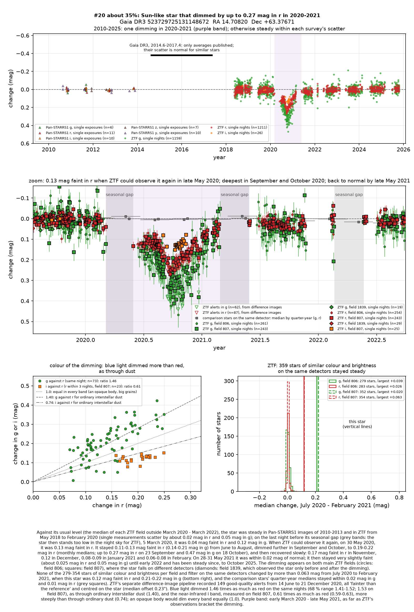
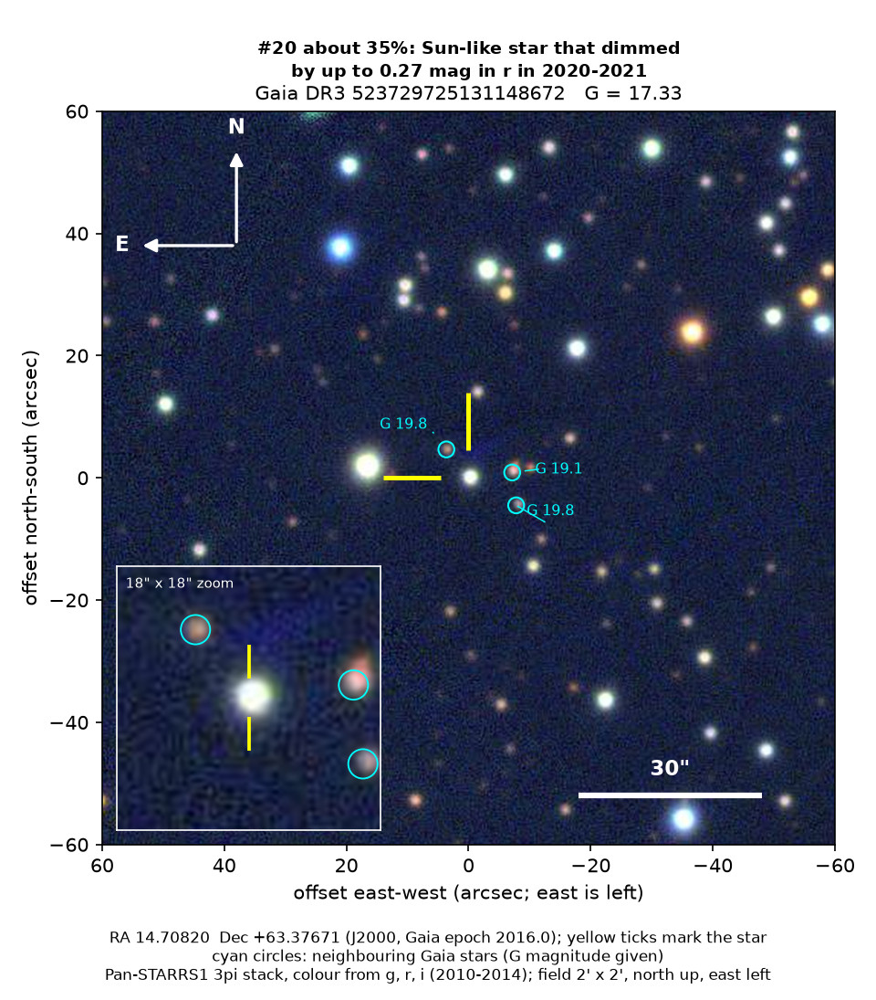
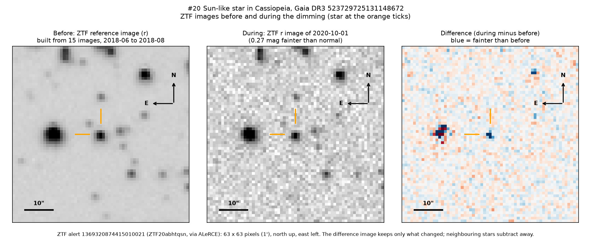

Professor of Mathematics
Paata Ivanisvili
Department of Mathematics, University of California, Irvine

Candidate 20: a Sun-like star that dimmed for about a year in 2020 and 2021
Why this estimate. The dimming is certain: ZTF, a survey telescope at Palomar Observatory in California, recorded it on two detectors, while hundreds of similar stars on the same detectors stayed steady. Its colour and the nearly unchanged infrared light point to dust. The estimate is not higher because only ZTF recorded it; its start fell while the star was too low in the night sky to observe; it lies where young stars with dusty discs are common, though it shows no sign of youth; two models of the star disagree; and there is no spectrum.
How to read the pictures. The finder chart shows a patch of sky two arcminutes across, about a fifteenth of the Moon’s width, with north up and east to the left. The star sits between the two yellow ticks, and the white bar is 30 arcseconds long. On a light curve the vertical axis is magnitude, a brightness scale on which larger numbers mean fainter stars, and it is drawn so that down means fainter. Purple shading marks the dimming, and grey shading the months when the star could not be observed. Each survey uses slightly different filters, so each is compared with its own normal level. The ZTF pictures show ZTF’s reference image of the star, an image taken during the dimming, and the difference between the two, in which only what changed remains: blue means fainter and red brighter.

What changed. The star is much like the Sun and lies about 1,800 parsecs (5,800 light-years) away in Cassiopeia, in the plane of the Milky Way, behind much interstellar dust. It shone steadily from 2010 to early 2020. When ZTF could observe it again after its yearly gap, at the end of May 2020, it had lost about 11 per cent of its red light. In September and October it was 0.19 to 0.22 magnitudes faint in red light and 0.28 to 0.33 in green, and on single nights it had lost more than a fifth of its red light and about a third of its green. It then recovered slowly and was back to normal by late May 2021, apart from a faint tail of about 2 per cent until early 2022. ZTF’s alert system flagged the star as fainter 149 times from June to December 2020, always centred on it.
Why it might matter. Dust passing in front of the star is the likeliest cause: green light dimmed 1.46 times as much as red, about as through ordinary interstellar dust, and two visits of WISE, NASA’s infrared space telescope, found the infrared almost unchanged, while an opaque body would dim all colours equally. Young stars, often dimmed for months by their own dusty discs, are common in this direction, but this star shows neither warm dust nor hydrogen emission, and it moves about 40 km/s differently from the stars around it, like an older star of the Milky Way’s disc. Starspots change a Sun-like star by a few per cent at most, and an eclipse by another star lasts hours or days. The dust might come from colliding planets or asteroids, or from a disc around an unseen companion. A spectrum would settle the star’s type and age.
No record of the dimming could be found. SIMBAD has no entry for the star, VSX, the variable-star index, has nothing within 30 arcseconds, and Gaia, the European Space Agency’s star-mapping satellite, lists no variability. It is in no variable-star, young-star or cluster catalogue checked, nor among the 81 dimming stars of Tzanidakis et al. (2025), and no transient report, Gaia alert or paper names it. ALeRCE, which holds ZTF’s alerts, has only machine-generated labels for it, one of which calls the light curve young-star-like.
- Star
- Gaia DR3 523729725131148672, a Sun-like star behind much interstellar dust
- Location
- RA 14.70820°, Dec +63.37671° (J2000), in Cassiopeia, 0.5 degrees north of the Milky Way’s mid-plane
- Distance
- about 1,800 parsecs (5,800 light-years), within a range of 1,590 to 2,050 parsecs
- Brightness
- Gaia G = 17.33, far too faint for the eye or a small telescope
- Probability
- This candidate is unconfirmed. The percentage under the title is an estimate of the chance that it is a real, previously unrecorded case of the kind described. The estimate has not been checked by outside experts. See the introduction to all fifty-eight candidates.
- Caveat
- There is no spectrum, and Gaia’s model, a cooler orange star, conflicts with the distance from its parallax. Only ZTF recorded the dimming, and the yearly gap hid its start. Cool dust far from the star cannot be tested. The star lies 1.3 degrees from candidate 27, which dimmed in 2021 to 2023 on the same ZTF fields; the two fall on different detectors and dimmed at different times, so a shared instrumental cause is unlikely, and they are too far apart in distance for one cloud to cover both.

